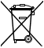

NK823x Safety Regulations
This section describes the danger levels and the relevant safety regulations applicable to the use of the NK823s product. Please read the following work instructions before beginning any work.
Danger Potential to Individuals
The NK823x Ethernet Port is powered with low voltage DC. While there are no specific safety regulations that apply to these devices, modifications made to safety/security systems in general may present a risk to the safety of the individual performing those modifications, as well as to the equipment itself.
Country-Specific Standards
Siemens Building Technologies products are developed and produced in compliance with the relevant international and European safety standards. This section provides warnings and recommendations specific to the NK823x Ethernet Port. Any additional country-specific or local safety standards and/or regulations that apply concerning project planning, installation, operation, and device disposal must also be taken into account.
 WARNING
WARNING

As for any electrical equipment, proper grounding is critical to the safe operation as it provides a protection against electrical shocks. Before starting any activity, be sure that the electrical installation complies with relevant regulations and conforms to local safety standards.
Assembly and Installation
The NK823x Ethernet Port and NE8002 cabinets must always be installed in a clean and stable environment. In particular, keep units and cabinets away from the following:
- High levels of dust.
- High temperature and humidity.
- Locations where it might become wet.
- Vibration and impact.
Conditions and power supply must match the specific requirements given in the Technical Data section of the specific datasheets.
Also, abide by the safety regulations of the connected devices.
Disposal and Recycling
 | The devices include electrical and electronic components and must not be disposed of as domestic waste. |
The devices have been manufactured as much as possible from materials that can be recycled or disposed of in a manner that is not environmentally damaging. However, they contain parts (batteries) that require disposal in a controlled waste stream according to local environmental standards and/or regulations.
Modifications to the System Design and the Products
CAUTION
Modifications to a system or to individual products may cause faults or malfunctioning.
Please request written approval from Siemens Building Technologies and from any relevant authorities concerning intended system modifications and system extensions.
Data Privacy and Protection
Make sure that the configuration of the system complies with local data privacy and protection regulations.